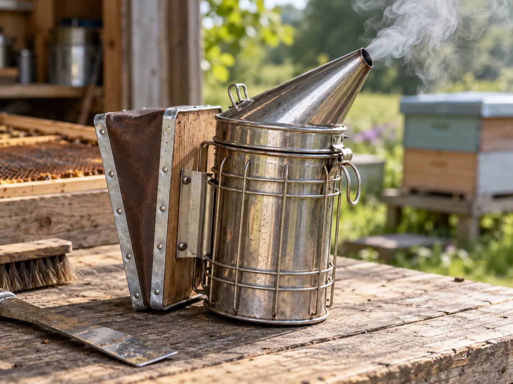
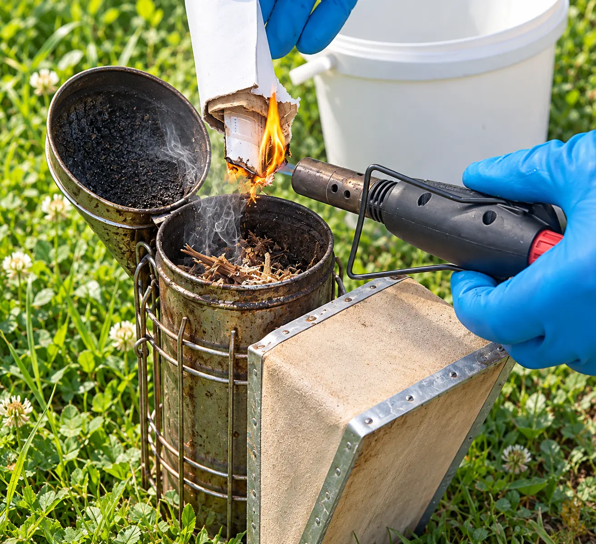
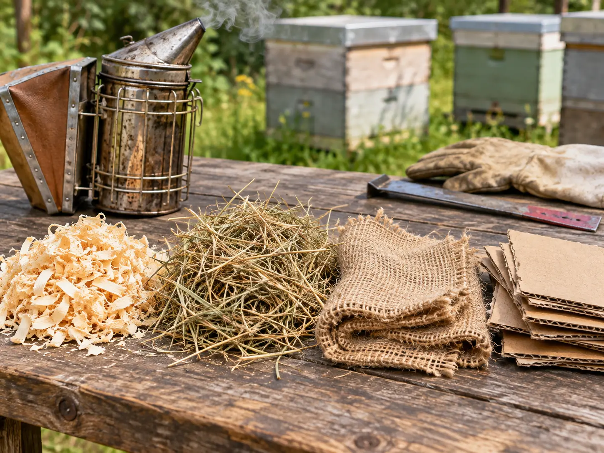
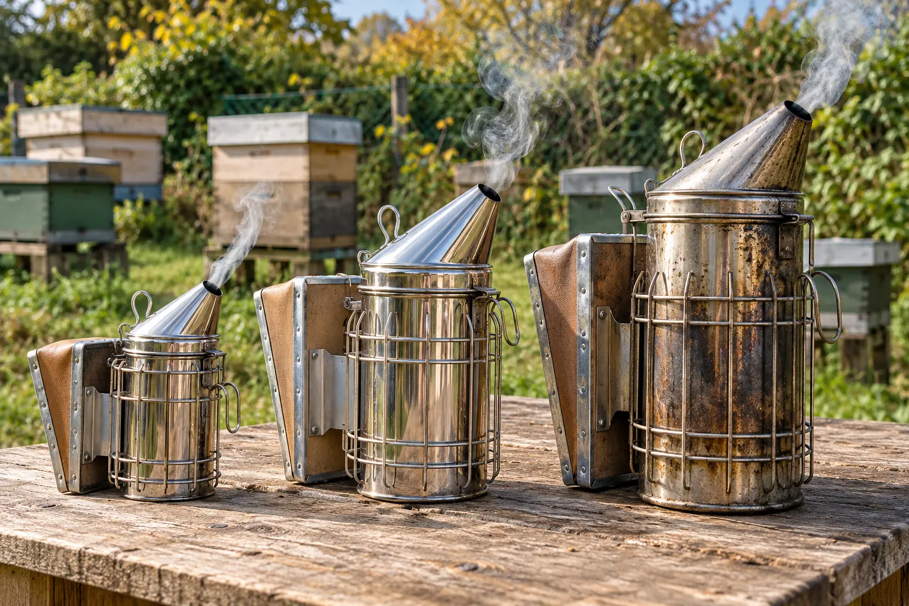

Last updated: 24 October 2026
What Does a Bee Smoker Actually Do?

A smoker is one of the most recognisable tools in beekeeping, but it is often misunderstood. It does not put honeybees to sleep. Small amounts of cool smoke can temporarily interrupt the defensive response of a colony, particularly the chemical signals that help recruit more bees when a threat is detected.
Smoke may also encourage bees to move towards their honey stores. You will often hear that bees mistake smoke for a forest fire and fill up with honey in preparation to escape. That is a traditional explanation, not a fully proven description of everything happening inside the colony. Controlled research has identified changes in defensive responses, but the complete mechanism is more complicated.
The purpose is not to fill the entire hive with smoke. It is to make the inspection safer and calmer for both beekeeper and bees, while causing as little disturbance as possible. If you are new to handling bees, read our step-by-step hive inspection guide alongside this article.
Parts of a Traditional Bee Smoker
Most conventional smokers have a metal fire chamber, a hinged conical lid and spout, hand-operated bellows, a raised fuel grate or hearth, and sometimes a protective wire heat guard and hook.
The bellows push air into the bottom of the chamber, encouraging the lit fuel to smoulder and sending smoke from the spout. This is why a smoker should be lit at the bottom rather than trying to ignite the top of a tightly packed chamber.
How to Light a Bee Smoker: Step by Step
Start with clean, dry tinder and establish the fire at the bottom of the chamber. The photograph illustrates lighting the starter before adding the main smoker fuel. Follow the steps below for a steady, controlled smoulder.

- Choose a safe position. Work outdoors on stable, non-combustible ground away from long grass, dry leaves, fuel containers, clothing and hive roofs. Keep water and a safe extinguishing arrangement nearby.
- Check the smoker. Empty only fully cold ash, confirm the grate and air inlet are clear, check the bellows, and make sure the lid opens and closes correctly.
- Prepare two fuel layers. Have a small amount of easily ignited, clean, dry starter material and a larger supply of slow-smouldering untreated fuel ready before lighting.
- Start a small fire at the bottom. Ignite the starter with a match, long-reach lighter or carefully controlled gas lighter and lower it into the chamber. Operate the bellows gently to establish the flame.
- Add the main fuel gradually. Add small handfuls of dry material while continuing to puff the bellows. Let each addition catch before adding more; do not pack the fuel so tightly that it cuts off all airflow.
- Build up a steady smoulder. Once the fire is established below, top up with slower-burning fuel and press it down lightly with an appropriate tool if necessary. Keep hands clear of hot metal.
- Close the lid and test the output. Aim for a steady plume of pale, gentle smoke — never visible flame, sparks, burning fragments or painfully hot smoke. Do not direct the first test puffs towards bees.
- Keep it upright and monitored. Place the smoker on a stable fire-safe surface between uses, check that it stays alight, and never leave it unattended.
Practise lighting a smoker when you are not about to open a hive. A smoker that works reliably for a complete inspection is more useful than one that gives an impressive cloud for the first minute.
Matches, Disposable Lighters or Propane Torches?
| Method | Advantages | Limitations and precautions |
|---|---|---|
| Safety matches | Cheap, simple, easy to carry | Awkward in wind or damp conditions; keep fingers away from flame; extinguish spent matches safely |
| Long-reach gas lighter | Good reach, convenient ignition of starter material | Can struggle in wind; avoid holding a flame against the smoker for too long |
| Small butane/propane torch | Strong, controllable flame for difficult tinder | Greater burn and fire risk; not necessary for everyone; use only to light fuel safely, never on bees or hive equipment |
| Refillable lighter | Compact and convenient for regular use | Short reach and wind exposure can make it less practical than a long-reach lighter |
For most beginners: a long-reach gas lighter and prepared dry starter material are straightforward choices. A small torch is an optional convenience, not an essential item. Whichever method you choose, light the smoker away from the hive and follow the lighter manufacturer's directions.
Never use petrol, lighter fluid, accelerants, paraffin or liquid firelighters inside a smoker.
What Fuel Should You Use in a Bee Smoker?

The best fuel is clean, dry, untreated material that catches without too much effort, produces steady cool smoke, and does not blow hot embers towards the colony. Many beekeepers combine a quick-lighting base with a slower-burning main fuel.
| Fuel | Why use it? | What to watch for |
|---|---|---|
| Untreated dry wood shavings | Common, accessible and easy to combine with tinder | Use clean, known wood; fine dusty shavings may flare or throw sparks |
| Dry grass or hay | Lights easily and is often readily available | Can burn quickly; avoid mouldy, treated or contaminated material |
| Clean, untreated hessian | Can smoulder steadily and be packed compactly | Check that it contains no synthetic fibres, pesticides or other treatments |
| Dry pine needles | Traditional fast-lighting material | May burn rapidly or smell sharp; suitable only when dry and used carefully |
| Purpose-made smoker pellets or cartridges | Convenient and consistent when used as directed | Some require additional tinder; check composition and the smoker manufacturer's guidance |
| Clean plain cardboard / egg carton | Useful as a small starter layer | Check for coatings, adhesives and printed surfaces; some cardboard smoke is acrid |
| Dry untreated punky wood or bark | Slow smoulder when the right material is available | Avoid unknown, painted, damp, mouldy or chemically contaminated wood |
No fuel is perfect for every smoker. A supply kept dry in a labelled container is far more dependable than collecting damp material just before an inspection.
What should never go into a smoker?
- Plastic, synthetic fabrics, rubber, foam, coated packaging or treated hessian
- Painted, varnished, pressure-treated or creosoted timber
- Petrol, paraffin, lighter fluid, solvents, scented firelighters or oils
- Unknown pallet wood, contaminated timber or chemically treated garden waste
- Glossy printed material, plastic-laminated cardboard or other suspect packaging
- Mouldy, heavily damp or contaminated vegetation
Avoid relying on loose sawdust or fine ash that could be blown out as hot particles. The fuel does not have to be exotic; it needs to be known, clean and safely smouldering.
Different Types of Bee Smoker
Bee smokers are available in several materials, sizes and designs. The familiar bellows-operated smoker works in much the same way regardless of its metal finish: air enters below the burning fuel and smoke leaves through the spout. The material mainly affects durability, maintenance, weight, appearance and price, while the barrel size, bellows and airflow affect how convenient it is to use.
For most UK beekeepers, the main choices are galvanised steel, stainless steel and copper. Each is available in conventional designs, although the exact combinations depend on the manufacturer.

What are bee smokers made from?
Galvanised-steel smokers are made from steel protected by a zinc coating. They are often an economical choice and are perfectly serviceable when well made. The coating may deteriorate with prolonged heat, wear and corrosion, particularly on heavily used equipment. Inspect older smokers for damage and do not attempt to repair a fire chamber with paint or unsuitable coatings.
Stainless-steel smokers resist rust better than ordinary or galvanised steel and are popular for regular use, particularly in damp UK conditions. They generally cost more than basic galvanised models but can offer a good balance of durability, upkeep and price. The grade and thickness of metal, hinge quality and workmanship still matter.
Copper smokers are a traditional, premium option, including British-made models. Copper develops a darker patina with age and is comparatively soft, so dents and marks may appear more readily. A good copper smoker can last for many years and may be repaired, but it usually commands a higher price. It will not automatically produce cooler or better smoke than a well-designed steel smoker.
| Material | Advantages | Disadvantages | Best suited to |
|---|---|---|---|
| Galvanised steel | Often the least expensive; familiar and practical | Zinc coating can deteriorate with heavy use; may eventually corrode | Beginners or occasional inspections on a budget |
| Stainless steel | Good resistance to rust; durable; straightforward to maintain | Normally more expensive than basic galvanised models | Most hobbyists and regular UK apiary use |
| Copper | Traditional appearance; long potential service life; repairable in some designs | Usually expensive; softer metal can dent; naturally darkens | Beekeepers seeking a traditional, long-lasting smoker |
Does smoker size make a difference?
Small or compact smokers are light and easy to carry, but their smaller chambers hold less fuel and may need topping up during longer inspections. Medium smokers suit many hobby beekeepers because they balance fuel capacity and ease of handling. Large smokers hold more fuel and are useful when working several colonies, although they are heavier and take more room in an equipment box.
A larger smoker does not mean that you should use more smoke on the bees. It simply means there is more fuel capacity to keep a steady supply available.
Other designs and features to compare
| Type or feature | Advantages | Limitations |
|---|---|---|
| Compact bellows smoker | Portable, lighter and convenient for short visits | Shorter burn time; smaller opening for cleaning and filling |
| Medium or large bellows smoker | More fuel capacity; well suited to repeated inspections | More weight and bulk |
| Protective wire heat guard | Helps separate hands and clothing from the hot barrel | Guard itself can become hot; does not make the smoker fireproof |
| Traditional British / bent-nose smoker | Familiar hand-operated design; available in different materials and sizes | Quality and replacement-part availability vary by model |
| Replaceable leather or synthetic bellows | Repairable bellows can extend the smoker's working life | Material may age or split; valves and fixings need checking |
| Removable raised grate or fire basket | Maintains airflow beneath fuel; makes cold-ash cleaning easier | Can clog, distort or be lost if not maintained |
| Rechargeable vapour device | No burning fuel or glowing embers during operation | Not a conventional smoker; effectiveness, consumables and cost differ |
Which material would I choose?
For a first smoker, a medium stainless-steel model with a protective guard, sturdy hinge and reliable bellows is a sensible all-round choice. A well-made galvanised smoker can be a more economical alternative. Copper is worth considering if you value traditional equipment and longevity and are comfortable with the higher initial cost. Before buying, check whether spare bellows, replacement grates and other parts are available.
British supplier E. H. Thorne lists copper, galvanised and stainless-steel models, while National Bee Supplies shows a range of different sizes and constructions. These are examples rather than an endorsement of one particular model.
Finally, a rechargeable vapour device such as Apisolis is an alternative to a combustion smoker, not a copper, stainless or galvanised version of one. Likewise, a gas torch is a means of lighting a conventional smoker rather than another smoker type.
Which Bee Smokers Are Best for UK Beginners?
Rather than declaring one brand the universal winner, I would look at these features when choosing your first smoker:
- A medium-to-large barrel: enough capacity to remain lit through a normal inspection
- A good heat guard: helpful separation between the hot chamber and your hands or clothing
- Reliable bellows: easy to operate repeatedly, with repair or replacement parts available
- A sound lid, grate and air path: essential for steady combustion
- Reasonable weight and a secure hook: helpful when carrying equipment around an apiary
- Supplier support: replacement bellows and suitable fuel often matter more than decorative finish
My suggested starting point: a guarded, medium or large stainless-steel bellows smoker from a reputable UK bee-equipment supplier. A good galvanised model can also be perfectly serviceable. Specialist premium smokers may be worthwhile for frequent inspections; an expensive model will not compensate for poor fuel or lighting technique.
UK retailers such as E. H. Thorne and National Bee Supplies illustrate the range of stainless, galvanised, guarded and specialist options. Prices and availability change, so compare current models before buying.
How Much Smoke Should You Use?
A little is usually enough. If the colony needs it, one or two gentle puffs at the entrance or just under the crown board can be sufficient before you inspect. Give the bees a moment to respond and reassess before applying more.
While working, a light waft across the tops of the frames can move bees out of the way of your fingers or hive tool. Aim the smoke across the frame tops rather than blasting it directly down onto the brood or queen. Continue to watch the bees' behaviour.
Good handling technique, suitable weather and proper preparation matter just as much as smoke. Our hive-inspection guide covers how to work through frames without unnecessary disturbance.
When Should You Avoid Smoke, or Use Less?
| Situation | Practical approach |
|---|---|
| Calm bees on a good inspection day | Have the smoker ready, but you may not need to use it |
| Looking for or handling a queen | Use as little smoke as possible; too much can make her run or hide |
| Inspecting delicate young brood or queen cells | Avoid blasting hot smoke or embers onto open comb |
| Handling honey supers for harvest | Avoid excessive smoke on honey comb; consider bee escapes and gentle brushing where appropriate |
| Robbing or very unsettled colonies | Do not assume more smoke solves the problem; minimise exposure and close the colony if necessary |
| Very dry, windy or high fire-risk conditions | Assess local restrictions and fire danger; postpone non-essential work if safe smoker use is doubtful |
| Cold, rainy or otherwise unsuitable inspection weather | Normally postpone routine inspections rather than trying to overcome poor conditions with extra smoke |
There is an important distinction between having a smoker ready and using it continuously. The first is good preparation; the second is rarely necessary. If you are trying to identify a queen or investigate a possibly queenless colony, especially avoid driving bees and the queen repeatedly from frame to frame.
Common Smoker Problems and How to Fix Them
| Problem | Likely reason | What to do |
|---|---|---|
| Goes out after a minute | Only top fuel lit; damp or tightly packed chamber | Safely restart at the bottom with dry tinder and a working air path |
| Lots of flame but little smoke | Too much airflow or fast-burning tinder | Add suitable slow-smouldering fuel gradually, without fully blocking airflow |
| Black or acrid smoke | Unsuitable, contaminated or overheated fuel | Stop, extinguish safely and replace with known clean fuel |
| Sparks or embers from nozzle | Loose burning fragments or excessively vigorous bellows | Stop using it near bees; safely adjust or replace fuel and check the grate and manufacturer's design |
| Bellows ineffective | Blocked airway, torn bellows, faulty valve | Allow to cool, then inspect, clear or replace components |
| Lid difficult to open | Tar and soot build-up | Allow to cool fully before scraping and cleaning according to manufacturer guidance |
Fire Safety, Extinguishing and Storage
- Keep the smoker away from dry grass, timber, clothing, vehicles and loose combustible equipment.
- Keep it upright and never rest a hot smoker on a hive roof, plastic hive, carpet or vehicle floor.
- Use a designated fire-safe location for refilling, setting down and extinguishing the smoker.
- Follow the manufacturer's instructions to extinguish all embers and allow complete cooling.
- Do not tip glowing fuel onto the ground, into bins or near vegetation; ashes can remain hot long after visible smoke stops.
- Never put an alight or warm smoker into a car boot or storage box.
During prolonged dry spells or fire warnings, consider postponing routine inspections. A smoker is a small controlled fire, and the potential consequences of an escaped ember are much greater than the inconvenience of rescheduling.
A Simple Beginner's Smoker Checklist
- Choose a sturdy guarded smoker with sound bellows.
- Carry clean, dry, untreated starter and main fuel.
- Light the fuel from the bottom, before opening the hive.
- Check for a steady, cool plume with no flame or sparks.
- Use as little smoke as the bees actually need.
- Keep the smoker upright and away from flammable material.
- Fully extinguish, cool and check it before storing.
For anyone assembling their first equipment kit, our getting started with beekeeping guide and beekeeping guides are good companions to this article.
Frequently Asked Questions
A little cool smoke temporarily changes how a colony responds to disturbance, interfering with alarm communication and often encouraging bees to retreat towards their stores. It is not an anaesthetic.
Clean, dry, untreated natural material that smoulders steadily is best. Untreated wood shavings, suitable dry grass, untreated hessian and purpose-made smoker fuel are common options. Avoid chemically treated or synthetic materials.
A controlled small butane or propane torch may be used to ignite kindling inside a traditional smoker, away from the hive and flammable surroundings. Extinguish and set down the torch safely before handling bees. Never direct a torch into the hive.
The fuel should be burning at the bottom and smouldering steadily, producing a consistent stream of pale smoke without sparks, flame or excessive heat at the outlet.
Have a working smoker available, but use the minimum smoke needed. A calm colony may need none. Excess smoke can disrupt the colony and make queen finding more difficult.
Heavy smoke applied directly to open honey comb can leave unwanted odours, so use smoke sparingly when working supers and consider bee escapes or gentle brushing when harvesting.
Follow the manufacturer instructions, put the smoker on a non-combustible surface, safely extinguish the embers, and check that the contents are fully cold before disposal or storage. Never transport or store a hot smoker.
Further Reading and Sources
This guide draws on UK beekeeping practice, current supplier descriptions and published research. For more detail, see the E. H. Thorne smoker guide, Simon the Beekeeper Smoker Guide or BeezKnees 101 lighting a smoker.
Join the Conversation
Beekeeping is all about learning from one another. Follow BeezKnees for more practical UK beekeeping guides, seasonal observations and equipment explainers.
Follow the BeezKnees Facebook Page